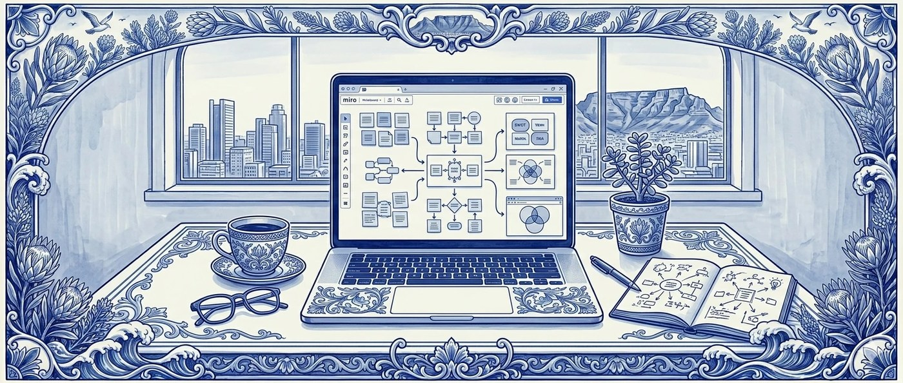

Restructuring a BA degree for distance delivery
In March 2025, I was brought in as a contractor to help Inscape map its BA in Digital Marketing and Communication for distance delivery. The institute had received SAQA approval to deliver the degree in an asynchronous block-module format and needed someone to translate the existing in-person degree into the new structure.

The Structural Reality
The brief, as scoped, was project-management adjacent: take the existing subjects, re-map them for the distance format, get the content ready for development. The reality, once I started looking at the source material, was different.
The first thing that became visible was repetition. The degree had been designed across multiple writers, with subjects shared across other degrees in the institute's offering. Foundational concepts — SWOT analysis being a small but representative example — appeared in three or four places across the three years with no apparent coordination. Some of this was unavoidable cross-faculty content that students received regardless of which degree they enrolled in. Some of it was just that no one had looked at the whole degree as a single learning journey.
"There were stacks of subjects, each internally coherent, that didn't talk to each other."
The second thing that became visible was that the brief was downstream of a structural problem. You couldn't meaningfully restructure the degree for distance delivery without first reviewing what the degree was actually trying to produce. The exit-level outcomes — the SAQA-approved statements of what a graduate should know and be able to do — needed a fresh look before any subject-level mapping made sense. I worked through this with the team, adjusted the exit-level outcomes within what SAQA would allow, and then re-mapped subjects against the revised outcomes.
Mapping for Distance
The institute had already decided to consolidate the subject offering for the distance version. My job was to make that consolidation real at the unit level: deciding what content lived where, in what sequence, with what learning outcomes, and how each subject scaffolded into the next. Each subject runs across three years; each year contains six modules; each module is six weeks; each week is one unit.
Foundations
Marketing Studies and Communication Studies, two formerly separate subjects, collapsed into one integrated first-year subject.
Tools
Formerly Computer Applications — the technical stack the digital professional actually works in.
Practice
Digital Marketing, with research, capstone, and project work feeding in — studio-based application.
Industry
Media Studies and Consumer Behaviour, feeding into the business and context of the field.
For Foundations 1, that meant translating two formerly separate first-year subjects into six modules — three on marketing principles, three on communication principles — and then breaking each module into six weekly units with focus topics, learning activities, and content-scope guidelines.
The Three-Check Structure
The degree's pedagogical paradigm is design thinking, its intended graduate finishes around 2030, and AI is both a topic students need to understand and a tool they will use throughout their studies. The problem was how to bake those three considerations into every unit, consistently, in a way that survived contact with multiple content developers writing in parallel. So I attached three checks to every unit in the brief, sitting alongside the content scope and learning outcomes as something a developer had to actively answer.
Design Thinking Check
Each unit must include a moment of student ideation or prototyping before formal models are introduced.
Real-World Check
Each unit must carry at least one South African industry example.
Future-Proof Check
Each unit must address how AI, digital transformation, or sustainability shapes contemporary practice in that subject area.
AI as a Thinking Tool
The same logic showed up at the activity level. One of the early units in Foundations 1 includes an activity where students ask ChatGPT to write a one-sentence definition of marketing, then critique what the AI produced — what was left out, what assumptions it made, what they would have included instead. A student who outsources thinking to AI fails this activity, because they have nothing to critique with.
"The point isn't to teach students about AI. It's to make AI use part of the learning task in a way that requires the student to bring their own developing judgement to the output."
Fictional Brands for Real Learning
From January 2026, I picked up the content development for the first half of Foundations 1 — Modules 1 through 3 — as the bridge between the design phase and the team that would carry the remaining modules. A degree being written in 2026 for students graduating in 2030 has a content-dating problem: every named campaign, every linked video, every reference to a current South African brand carries the risk of being stale or broken by the time students encounter it. The methodology I developed was to build a small set of fictional South African businesses — a fast-casual chicken chain, a coastal lodge group, a digital media company, a Cape Town AI startup — as running case studies across the modules. Each was specified in enough detail to feel grounded, without anchoring the content to a real-world entity that could change or disappear. Real brand references stayed where they served the example better than a fiction would, but the load-bearing case studies were fictional by design.
The 2030 Bet
I've been writing curriculum content in 2026 for someone who will enter the workplace in 2030.
My contracted work on Foundations 1–3 concludes in June 2026. The structure was adopted across the rest of the subjects, content development for the modules I'm not writing is underway with other developers, and the degree is being marketed to its first distance cohort.
Every decision about what to teach about AI — what to include as a topic, how to design assessments around tool use, what skills to scaffold first — is a bet about what 2030 will look like. The bets are visible in the structure. Whether they're the right ones is a question that will only resolve in five years, and the work of revising them as the landscape moves is part of what AI-integrated curriculum design now means.
Testimonials
Get in touch
Tell me what's going on with your content. I'll let you know whether I can help and what the right next step is.